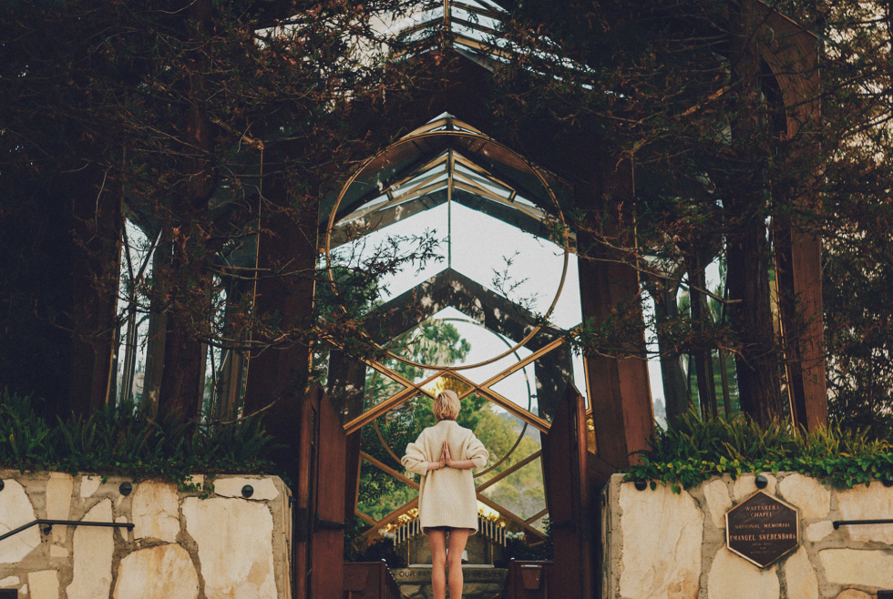

Festival
Film
Movie Night with Film Director Paul Rosdy
Date:
24.01.2019
Time:
10:00
location:
Chernivtsi, Media Center Belle Vue, (Kobylanskoi St. 2-B)
Partner:
Austrian Honorary Consulate in Chernivtsi
Sponsor:
Austrian Honorary Consulate in Chernivtsi

The Austrian director Paul Rosdy presents his documentary film KINO WIEN FILM, which was filmed in 2018.
The subject area "History in Central Europe" makes it clear that a partnership-based exchange should also be designed with a sense of history and that a joint discussion about the past is needed.
Initiatives such as the Austrian-Ukrainian Historical Commission created at the beginning of 2017 make a lasting contribution to this.